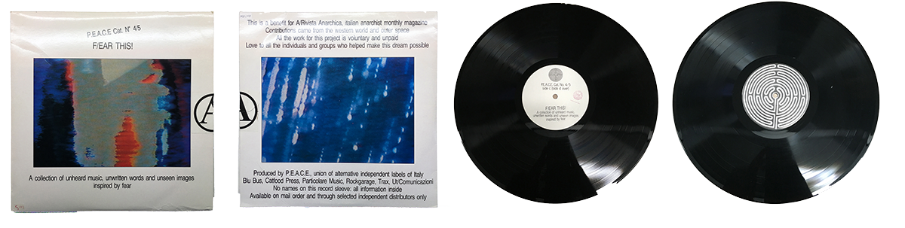

×

BASED ON 1987's RECORD FOUND AT THE IISH AMSTERDAM.
F/EAR THIS! is a double album published by PEACE in 1987, the association of independent Italian alternative labels in support of "A / Anarchist Magazine ". The project was built by friends, musicians, graphic designers and poets scattered everywhere, both in Italy and abroad. All of them were putting together music, words and images built around a common idea, fear.
"F / Ear this!" is a double album published by PEACE, the association of independent Italian alternative labels (which includes Blu Bus, Catfood Press, Particolare Music, Rockgarage, Trax, Ut / Comunicazioni and, recently, also Tunnel) in support of "A / Anarchist Magazine ".
The project was born at the beginning of last year: putting together music, words and images built around a common idea, asking for help from friends, musicians, graphic designers and poets scattered everywhere, both in Italy and abroad. All in all a simple and transparent initiative: once the theme was chosen (in this case, "fear"), a word-of-mouth mechanism was set in motion which, despite some complications and the inevitable accidents and delays, worked very well, arriving from here around Europe to the United States. Made some phone calls, sent a few letters and so put the rumor around, the material for "F / Ear this!" it came almost by itself: no contracts, no fees for participation, nor promises difficult to keep. Everyone collaborated freely and spontaneously, an absolutely indispensable condition for being able to "work" cleanly and satisfactorily.
In terms of musical "genres", this collection is obviously quite composite: it ranges from large and evocative atmospheres (the compositions of Giorgio Cantoni and the 2 + 2 = 5, for example) to the minimal chiseling work (the French Look De Bouk and the New Yorkers Hum), from hot and intelligent rock (Franti and the German Body & the Buildings among others) to the more cerebral experimentalism (such as that of Nurse With Wound and ParoksiEksta) to chemical laboratory jazz (Doctor Nerve, Don King and our Detonation).
We remain however, and this applies to all participants, in an "attitude sector" that sees creativity as a vital and positive fact, an instrument that, through words, sounds and images, tells people, their ideas, dreams and desires .
A.
Two Tones, Sometimes Timid / My Womb
B.
Detonazione, Dead Planet Blues
C.
The Blech, Wehr Kardoon
D.
Look De Bouk, Un Ecrin De Fer-Blanc Pour Le Noir Des Tes Cils
G.
History Of Unheard Music, Lawn Rangers
I.
LA1919*, Senza Tregua No. 2 (1986 Remix)
J.
Body & The Buildings, Assume To Be Dreaming
K.
Giorgio Cantoni, Un Anno Nelle Favelas
L.
Jane Dolman And Pete Wright, Fishes In Water
N.
Orient-Express, In Articulo Mortis
O.
Weimar Gesang, Light-Tight Place
P.
Annie Anxiety*, It Was July...
Q.
Gregorio R.U.S. Bardini*, Invocazione Di Giuliano Kremmerz
S.
Doctor Nerve, Unna (Recorded Live)
T.
Nick Didkovsky And Limpe Fuchs, When Hands FallTiple
U.
Nurse With Wound, Ship Of The Dead
V.
Die Form, Fear Of My Hands
W.
Possession, De VermisBass
X.
Thelema, J. C. S. / A Pagan Ritual
Y.
Paroksi-Eksta, Pneuma Ha Ïato


UNHEARD MUSIC BUILT AROUND A COMMON IDEA, FEAR.
